Disclaimer
Please note that data provided in the steps of user scenarios are sample data and differ from real life data of your company. This user scenario does not include setup, that is required by Latvian Localization standard. Sample data that are displayed in brackets are intended to provide an indication, what information is expected to be completed at a certain step. In terms of real life scenarios, please ensure that your master data are configured in the way as it is recommended by the Setup of this App.
Walkthrough: Import Configuration Package
Basic necessary system setup for the use of Latvian Localization is created, when applying the configuration package LV.BASE.EVALUATION.
- Click on the button Search for Page or Report...

- Type Config. Packages and select Config. Packages from Pages and Tasks

- Import Configuration Package LV.BASE.EVALUATION by pressing Import Package in the ribbon

Select the Config. Package LV.BASE.EVALUATION from your file system
Select LV.BASE.EVALUATION package from list of Config. Packages and press Apply Package.
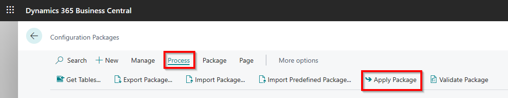
Walkthrough: Enter Registration number for Customer
About this walkthrough: Registration number is used in preparing bank export files and on document printouts, that are handed out to customers or vendors. This walkthrough demonstrates the process for entering registration numbers for customer in Customer card.
Roles: No specific user roles are required.
Story: You are Katrīna Pavlova, assigned by Cronus International to be a CFO in Cronus Ltd. The company runs business in the sphere of sales of furniture and rendering consultation services related to interior design upon request of local customers. Cronus Ltd is required to use customer company registration number on official documents sent to the customer. Your task is to add the company registration number to customer card.
Pre-requisites: Master data catalogues to be created and configured.
Steps:
- Click on the button Search for List
- Type Customer and select Customers from Pages and Tasks
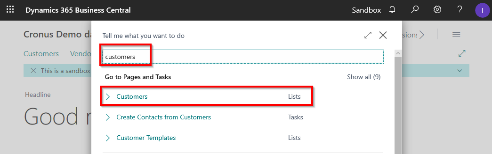
- Select Customer 10000 and Edit Customer's card
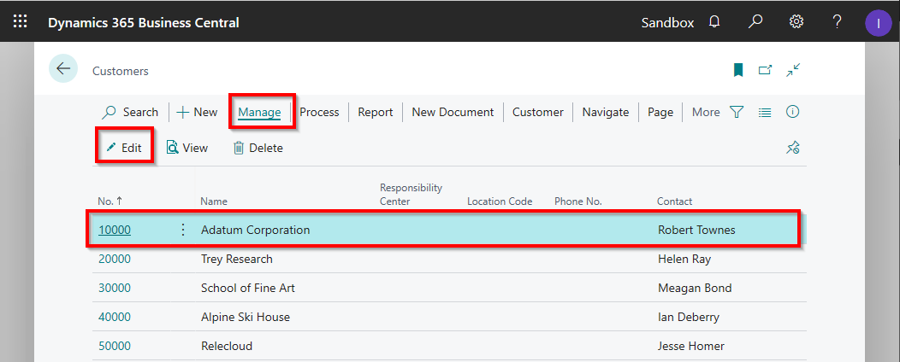
- Enter Customer Company Registration number (234567890) and it is done.

Walkthrough: Create Transporter
About this walkthrough: Each company may keep a list of transporters, where it includes vehicle and driver information for its own transport or external service provider transport. This walkthrough demonstrates the process for creating a transporter card.
Roles: No specific user roles are required.
Story: You are Linda Martina, a manager in Cronus Ltd. The company runs business in the sphere of sales of furniture and rendering consultation services related to interior design upon request of local customers. Cronus Ltd has signed a contract with local transportation company who would deliver sales orders to customers. Your task is to create new transporter card for JL Logistics, SIA mentioning the vehicle and the driver.
Prerequisite: No specific prerequisites are required
Steps:
- Click on the button Search for Page or Report...
- Type Transporter and select Transporters from Pages and Tasks

- Press New, in order to create a new Transporter card
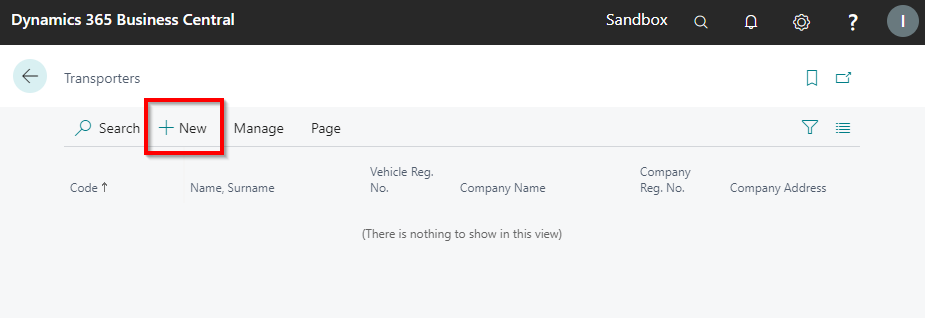
- Enter Code – (JL_VWTRANSP)
- Enter Name, Surname – (Jānis Liepa) for particular Driver
- Enter Vehicle Reg.No.- (LP 147)
- Enter Company Name- (JL Logistics, SIA)
- Enter Company Reg. No.- for Corporate Delivery Service providers (40003336661)
- Enter Company address - legal address of the Delivery Service provider (K.Ulmaņa gatve 160, Rīga)
- Transporter card is created and may be used in sales, purchase and transfer documents.

Walkthrough: Create payment file for bank
About this walkthrough: This walkthrough demonstrates the process for creating payment files in ISO format that can be uploaded into Banking Online of commercial banks of Latvia.
Roles: No specific user roles are required.
Story: You are Katrīna Pavlova, assigned by Cronus International to be a CFO in Cronus Ltd. The company runs business in the sphere of sales of furniture and rendering consultation services related to interior design upon request of local customers. Cronus Ltd is required to create a payment of outstanding vendor First Up Consultants (No. 20000) invoices. Your task is to create a payment file in ISO (SEPA) format that can be uploaded into your commercial bank online.
Prerequisite: Vendor Card, Vendor Bank Account Card, Open Vendor Ledger Entries.
Add IBAN to Vendor's card
Click on the button Search for Page or Report...
Enter Vendor, and click the related link.

Open vendor's No. 20000 Bank Account card.
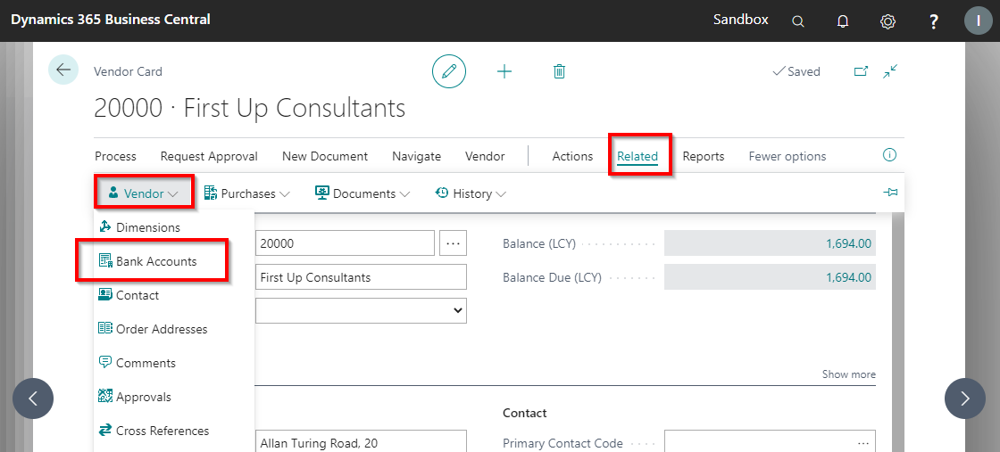
- Open ECA bank account card and add a bank account number to IBAN field - 1200 100004 and confirm with Yes 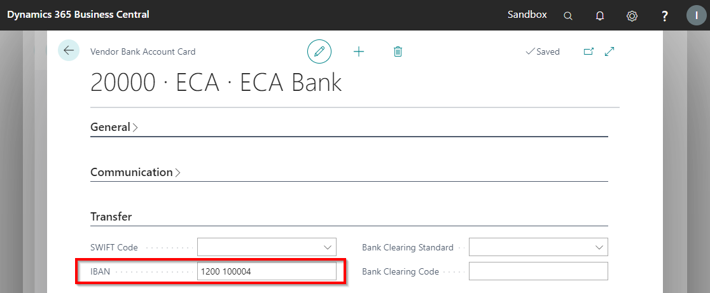
Create additional number series
Click on the button Search for Page or Report...
Enter No. Series, and click the related link. 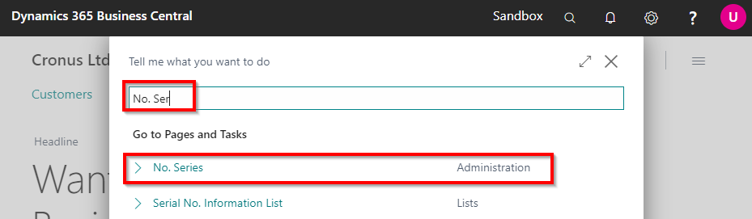
Clicking New in No. Series list.
Enter Code - MUZIN
Enter Description - Payment messages
Place checkmark at Default Nos.
Click on the field Starting No. in order to enter the numbers

- Enter Starting No. - MZ000001
- Enter Ending No. - MZ999999 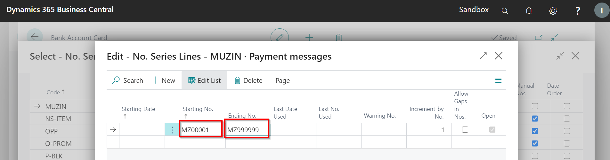
Adjust payment export settings
Click on the button Search for Page or Report...
Enter General Ledger Setup, and click the related link. 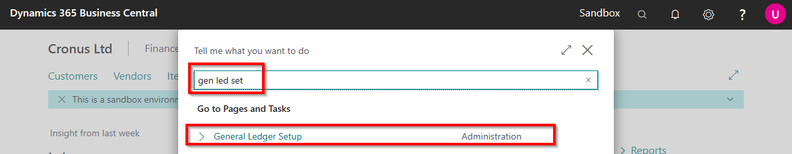
Enable function SEPA Non-EUR Export. 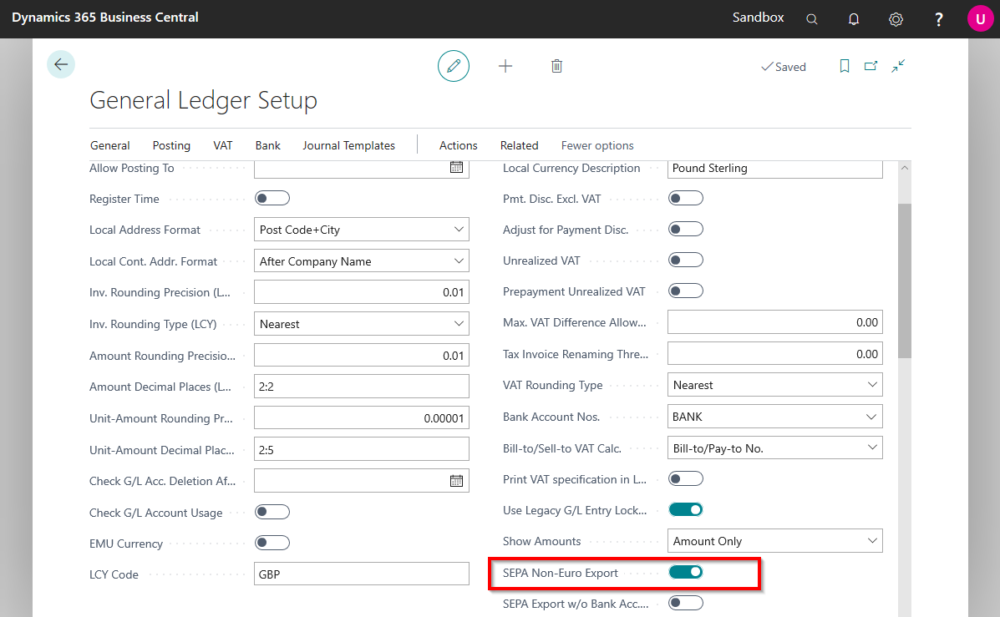
Steps:
Create a new bank account card.
Choose the Search icon, enter Bank Accounts and choose Bank Accounts from the List 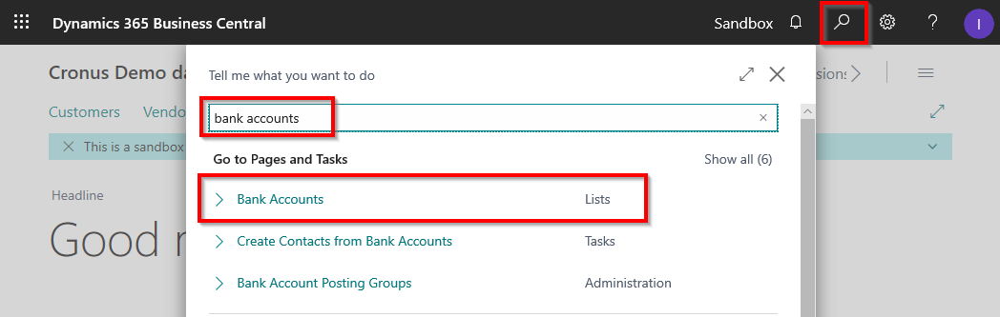
Press New, in order to create a new Bank Account card 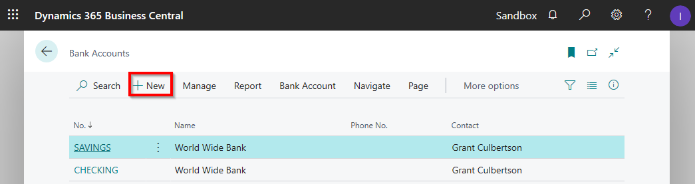
Enter Bank Account Name -Bank 111. Field No. will fill automatically.
In the field Credit Transfer Msg. Nos. choose - MUZIN.
Choose Bank Acc. Posting Group - CHECKING
Choose SWIFT - PARXLV22
Enter IBAN - LV11PARX1111111111111
Choose Bank Statement Import Format - LV_SEPA_IMPORT
Choose Bank Export Format - LV_SEPA_EXPORT
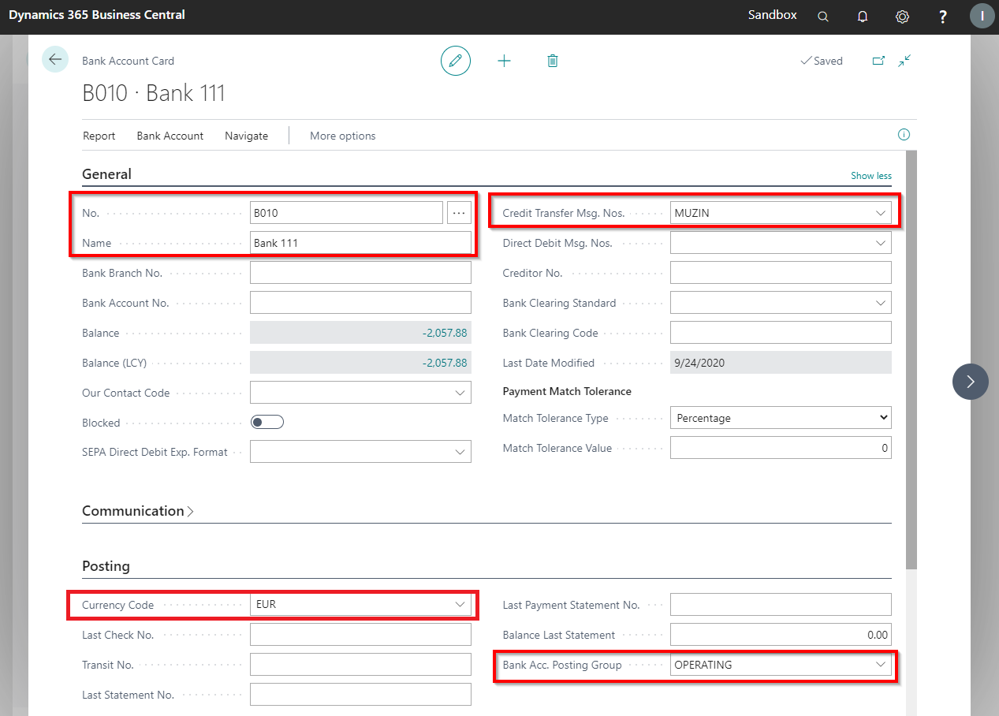 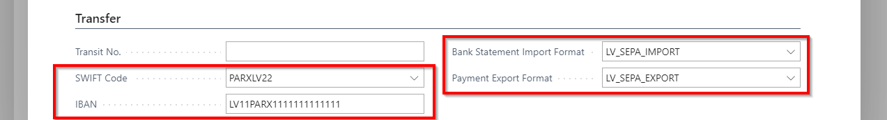
Create a new payment journal batch for particular bank card (B010).
- Choose the Search icon, enter Payment Journals and select the related link.
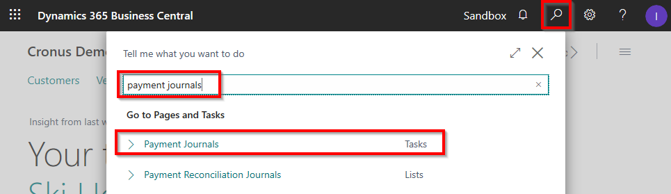
- From the Batch Name field open the journal batches list.
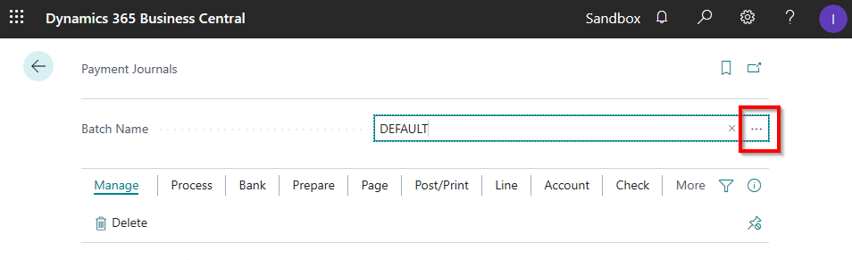
- On the ribbon, on the home tab, click New.
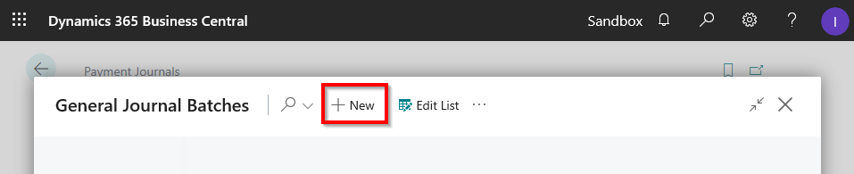
- In the Name and Description fields, enter name (B010) and a description for particular batch (Bank 111 journal).
- In the Bal. Account Type field, select - Bank Account.
- In the Bal. Account No. field, select particular bank account - B010.
- In the No.series field, select - GJNL-PMT.
- In the Allow Payment Export field, place a checkmark.
- Click OK. Stay in this particular journal to proceed further with the next steps.
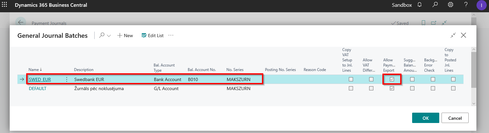
Run the Suggest Vendor Payments batch job.
- On the ribbon, on the home tab, click Suggest Vendor Payments.
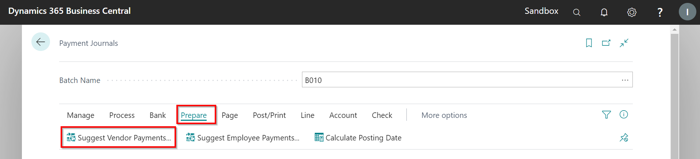
- Enter the following information on the Options FastTab.
- In the Last Payment Date field, enter the desired date from the purchase invoices (for example date 30 days after today's date).
- Place a checkmark in the Summarize per Vendor field.
- In the Posting Date field, enter today's date.
- Enter the following information on the Vendor FastTab
- In the No field, choose a vendor number from the list - 20000.
- Clear any other filters on this FastTab.
- Click OK to run the batch job.
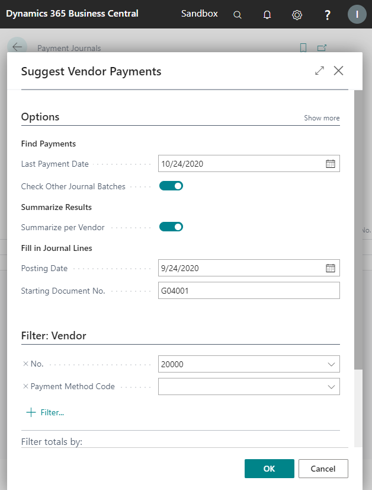
- Click OK to the message about currencies.
- In the field Recipient Bank Account select - ECA
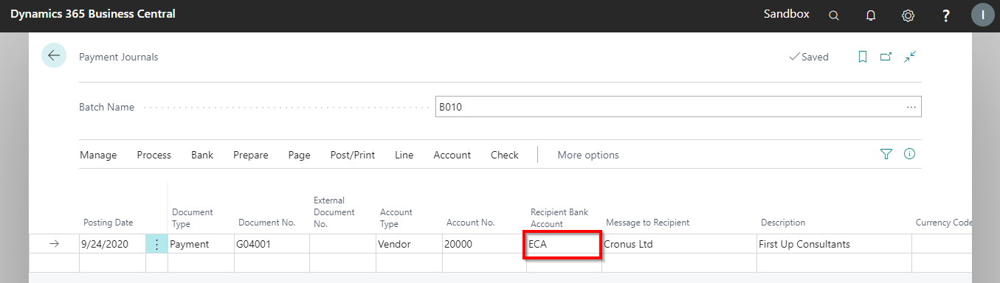
Create the SEPA Payment file.
- On the ribbon, on the home tab, click Bank and then click Export.
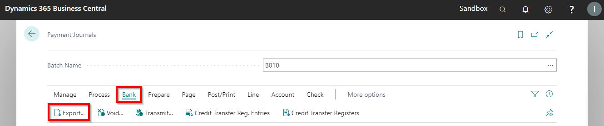
- On the message box, click Open to view the file.
- After viewing the file, return to Business Central.
Post the journal.
- On the ribbon, on the home tab, click Post.
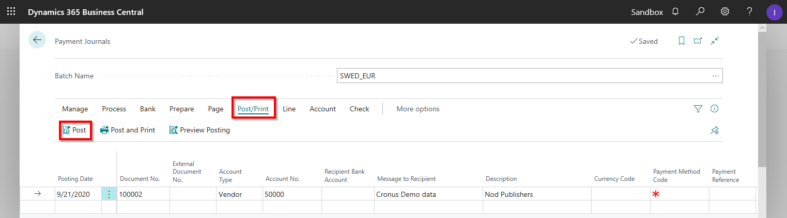
- Click Yes to post the journal lines.
- Click OK.
- Close the Payment Journal page.
Walkthrough: Import bank statement transactions
About this walkthrough: This walkthrough demonstrates the process for importing bank statement files into Business Central.
Roles: No specific user roles are required.
Story: You are Katrīna Pavlova, assigned by Cronus International to be a CFO in Cronus Ltd. The company runs business in the sphere of sales of furniture and rendering consultation services related to interior design upon request of local customers. Cronus Ltd is required to create a payment of outstanding vendor invoices. Your task is import bank transaction file in ISO (SEPA) format.
Prerequisite: No specific prerequisites are required
Steps:
- Click on the button Search for Page or Report...
- Type Payment Reconciliation Journals and select Payment Reconciliation Journals from Pages and Tasks

- Press Import Bank Transactions and choose Payment Bank Account List - B010

- Press Choose, in order to proceed with selecting the bank statement file CAMT052 sample for import
 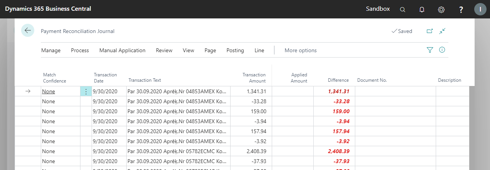
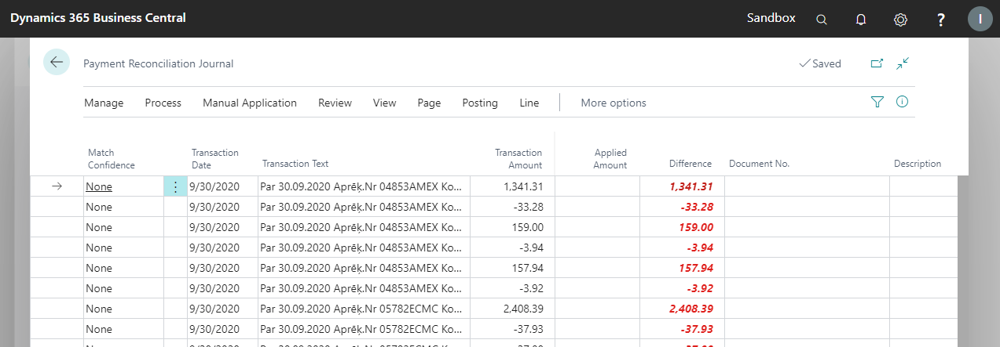
- Make sure that Payment reconciliation journal lines are being generated.
Walkthrough: Assign foreign payment code
About this walkthrough: National Bank of Latvia requires to specify foreign payment code for external incoming payments. When posting external incoming payments, a Foreign Payment Code needs to be assigned to particular transaction. Afterwards a Foreign Payment Report can be created. This walkthrough demonstrates the process for assigning foreign payment code for an incoming payment.
Roles: No specific user roles are required.
Story: You are Anette Hill, assigned by Cronus International to prepare Foreign Bank Payments 1-IB. The company runs business in the sphere of sales of furniture and rendering consultation services related to interior design upon request of local customers. You should assign a foreign payment code for incoming external payment and prepare the report.
Prerequisite: List of Foreign Payment codes needs to be completed. Created Customer Card, posted payment from the customer
- Click on the button Search for Page or Report...

- Type Foreign Payment Codes and select Foreign Payment Codes from Pages and Tasks

- Create New Foreign Payment Code
- No. - 111
- Name - Export/ Import of the goods 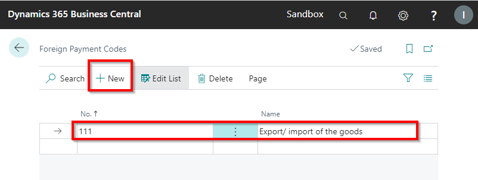
- Close the code card.
Steps:
Click on the button Search for Page or Report..
Type Payment Journals and select Cash Receipt Journals from Pages and Tasks
 *
*Create a journal line with an incoming payment from a foreign Customer
Enter Posting Date - today's day
Enter Document Type – Payment
Enter Account Type: Customer
Enter Account No.: (4000 Alpine Ski House)
Enter Amount: -50 000.00
Enter Bal. Account Type: Bank Account
Enter Bal. Account No.: B010
Choose Foreign Payment Code: 111

Post Journal by pressing on Post/Print and then Post. And close the journal.
Click on the button Search for Page or Report...
Type Foreign Bank Payments 1-IB and select Foreign Bank Payments 1-IB from Reports and Analysis

Set Printing Options:
- Year – enter year - current year
- Month – enter month - current month
- Company Official – from the list of Employees (Anette Hill)
- Transaction Limit, LCY – (10 000)
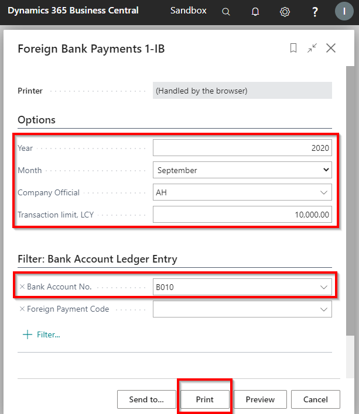
- Press Preview in order to view the Report

Walkthrough: Import Currency Exchange Rates
About this walkthrough: transactions in foreign currencies are recorded in the system in local currency, based on currency exchange rate. Currency Exchange Rates may be uploaded into system either automatically on a regular basis using a job queue entry or manually by user. The source of information is European Central Bank (http://www.ecb.int/stats/exchange/eurofxref/html/index.en.html). This walkthrough demonstrates the process for importing currency exchange rates.
Roles: No specific user roles are required.
Story: You are Anette Hill, assigned by Cronus International to import currency exchange rates.
Prerequisite: No specific requisites are required.
Steps: In order to enable the Currency Exchange Rate Service proceed with following steps:
- Click on the button Search for Page or Report...
- Type Currency Exchange Rate Services and select Currency Exchange Rate Services from Pages and Tasks
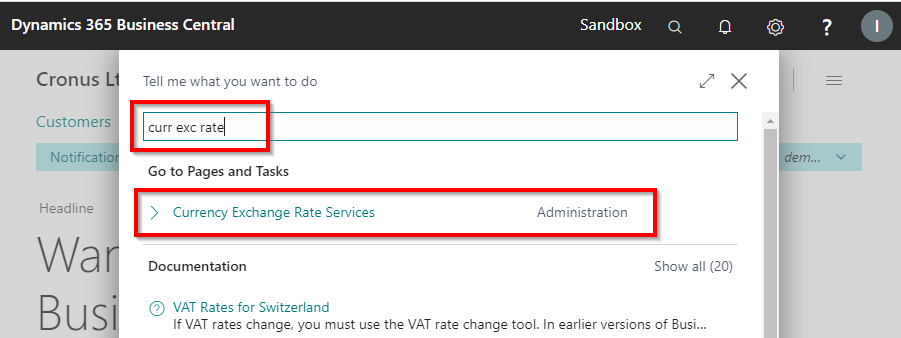
- Select ECB-EXCHANGE-RATES from Currency Exchange Rate Services and press Enable. Enabling will creates a job queue entry, what will automatically runs the currency rate import.
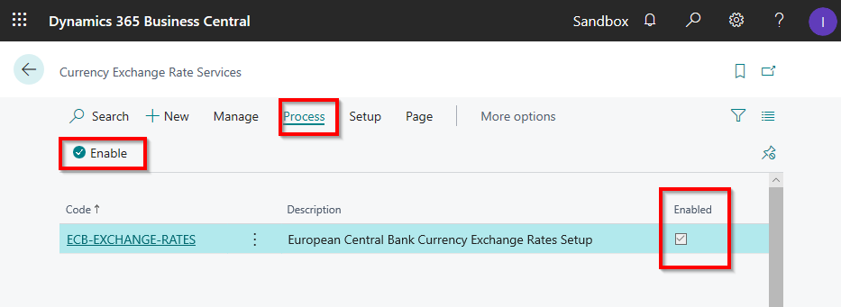
- Click on the button Search for Page or Report...
- Type Currencies and select Currencies from Pages and Tasks
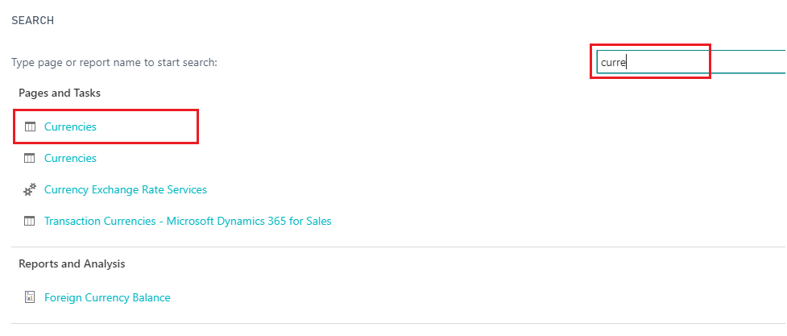
Review the list of Currencies. Review only the currencies that are supported by ECB, for example AUD. If the automatically job queue update will be already done, then the Exchange Rate will be updated.

It the rates are not yet updated then a manual update can be done by clicking on Import Currency Rates

- Set Import Currency Rates options:
- From Date – set the period start date for import
- To Date – set the period end date for import (by default is set to today)
- Curr.Exch. Rate Update Setup – select ECB-EXCHANGE-RATES (date must not be older than 90 days before. It is recommended to use yesterday's date.)
- Press OK 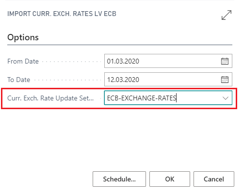
Note: This will import currency exchange rates from European Central Bank for the period of 90 days, when Exchange Rate Services is enabled, it creates a Job Que Entry for Exchange Rate Services. European Central bank publishes currency exchange rates for the day at 15:15 each working day. All foreign currency accounting transactions should be recorded, using currency exchange rate, that is available at the beginning of the current day (published the previous day)- Exchange Rate Amount. If currency exchange rate for current date is available (after 15:15), then the value is displayed in field Adjustment Currency Exchange Rate Amount. Currency reevaluation is done based on Adjustment Currency Exchange Rate Amount at the end of the period. Foreign currency exchange rate amounts are calculated as amount of foreign currency per 1 EUR (1.00 EUR = 1.6242 AUD).
Walkthrough: Prepare document printouts
Sales Prepayment Invoice
About this walkthrough: is prepared for customers as a sales prepayment invoice for goods not yet shipped provided as sales source document. The printout has all required data for sales prepayment document. This walkthrough demonstrates the process for printing sales prepayment invoice.
Roles: No specific user roles are required.
Story: You are Katrīna Pavlova, assigned by Cronus International to be a CFO in Cronus Ltd. The company runs business in the sphere of sales of furniture and rendering consultation services related to interior design upon request of local customers. Cronus Ltd has agreed on a sales order with 50% prepayment with customer 20000 Trey Research, therefore your task is to prepare a sales prepayment invoice.
Steps:
- Choose the Search icon, enter Sales orders, and click the related link.
- On the ribbon, on the home tab, click New to create the prepayment sales order.
- In the Customer field choose customer 20000 and move to the next field. The sales order header is automatically filled in with the default settings from the customer card.
- In the Document Date, Posting Date and Order Date fields, enter desirable date, for example today's date.
- Expand the Prepayment FastTab.
- In the Prepayment % field, enter 50.
- In the Prepmt. Payment Terms Code enter 14 DAYS.
- Move to the Lines FastTab.
- In the first line enter the following information:
- In the Type field, enter Item.
- In the No. field, enter 1896-S.
- In the Quantity field, enter 1.
- In the Unit Price Excl. VAT field, enter 649.40.
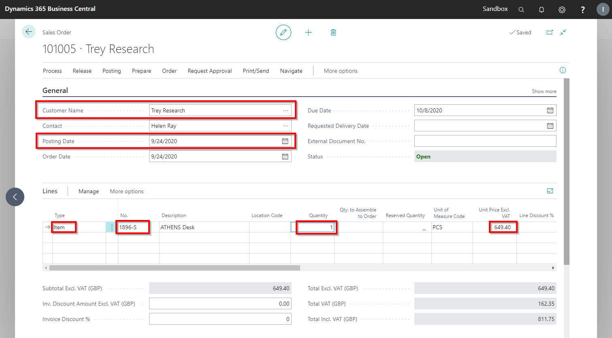 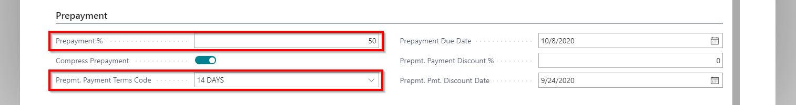
- Print Sales Prepayment Invoice - Particular Print button LV Sales Prepayment Invoice is located in the ribbon under the tab Actions, in section Print.
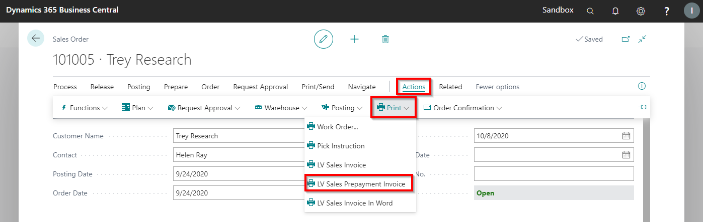
- Set Printing Options:
- Count of Copies – 0
- Print Payer – not marked as checked
- Print Amount in LCY – not marked as checked
- Print Salesperson Name – not marked as checked
- Print VAT Specification – not marked as checked
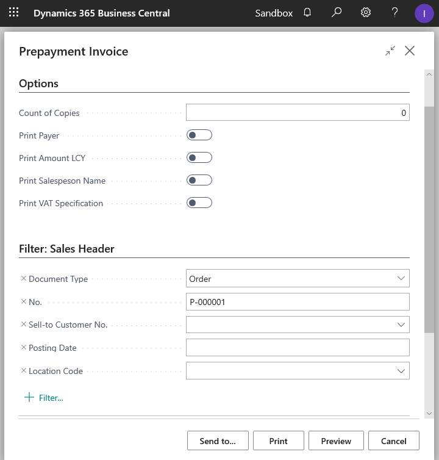
- View Preview
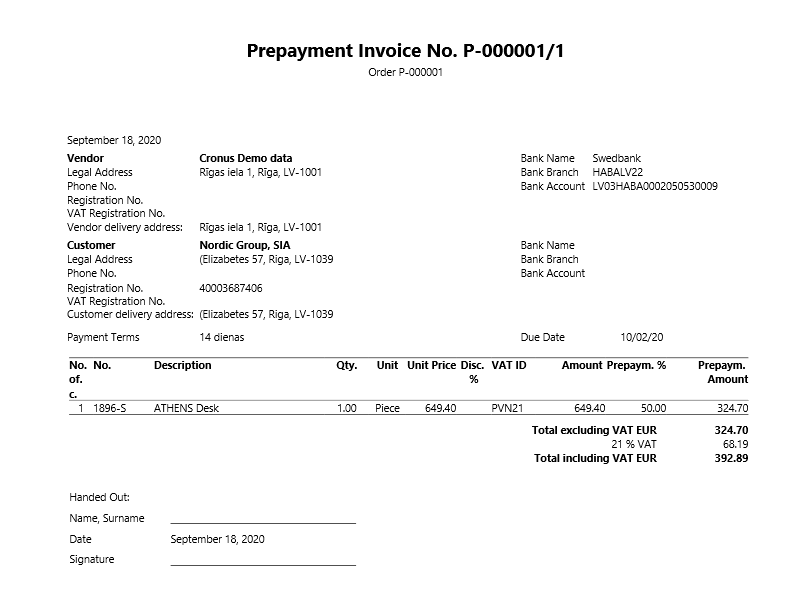
Note: document can be printed from unposted sales documents- Sales Order.
Sales Invoice
About this walkthrough: is prepared for customers as a sales invoice for goods shipped as sales source document. The printout has all required data for sales. This walkthrough demonstrates the process for printing sales invoice.
Roles: No specific user roles are required.
Story: You are Peter Saddow, assigned by Cronus International to be a salesperson in Cronus Ltd. The company runs business in the sphere of sales of furniture and rendering consultation services related to interior design upon request of local customers. Cronus Ltd has agreed on a sales order with customer 20000 Trey Research, therefore your task is to prepare a sales invoice.
Pre-requisites: Master data catalogues to be created and configured.
Steps:
- Choose the Search icon, enter Sales orders, and click the related link.
- On the ribbon, on the home tab, click New to create the sales order.
- In the Customer field enter 20000 and move to the next field. The sales order header is automatically filled in with the default settings from the customer card.
- In the Document Date, Posting Date and Order Date fields, enter today's date.
- Enter Sales Person code PS for Peter Saddow
- Move to the Lines FastTab.
- In the first line enter the following information:
- In the Type field, enter Item.
- In the No. field, enter 1906-S.
- In the Quantity field, enter 1.
- In the Unit Price Excl. VAT field, enter 281.40.
- Move to a new sales order line.
- In the Type field, enter Item.
- In the No. field, enter 1964-S.
- In the Quantity field, enter 4.
- In the Unit Price Excl. VAT field, enter 125.10.
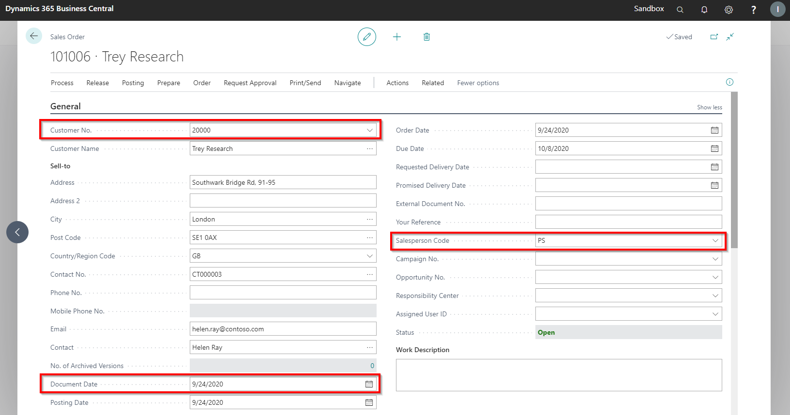 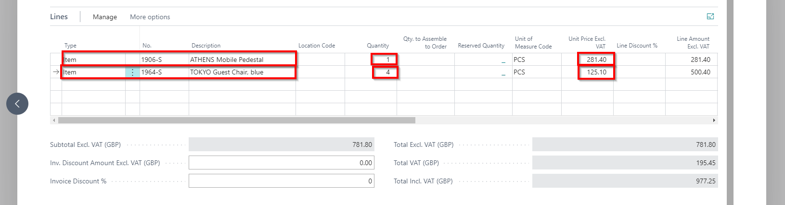
- Print Sales Invoice- Particular Print button LV Sales Invoice is located in the ribbon under the tab Actions, in section Print.
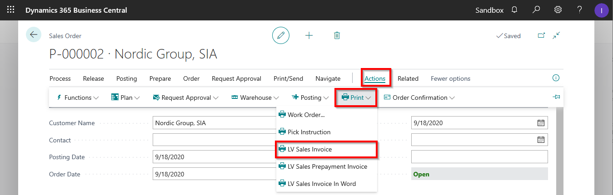
- Set Printing Options:
- Count of Copies – enter 1, that will ensure printing of one original and one document copy
- Service invoice – should not be checked
- Print Payer – should not be checked
- Print Transporter – select Sender for Cronus Ltd to appear as Transporter
- Print Amount in LCY – should not be checked
- Print Salesperson Name – insert a checkmark
- Print VAT Specification – insert a checkmark
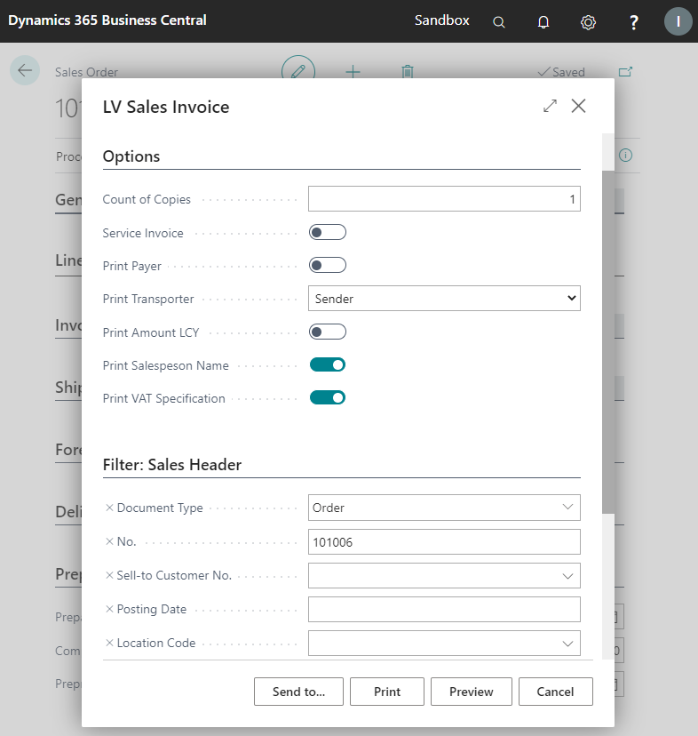
- Press Preview
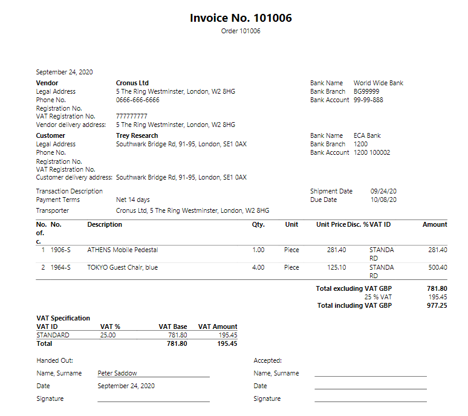
Transfer Invoice
About this walkthrough: Transfer of goods is required to be supported by a delivery note – transfer invoice. The document indicates the quantity and unit costs of goods transferred. This walkthrough demonstrates the process for printing transfer invoice. Transfer of goods is required to be supported by a delivery note – transfer invoice. The document indicates the quantity and unit costs of goods transferred.
Roles: No specific user roles are required.
Story: You are Marks Hansons, assigned by Cronus International to be a warehouse employee in Cronus Ltd. The company runs business in the sphere of sales of furniture and rendering consultation services related to interior design upon request of local customers. Cronus Ltd requires to transfer goods from location MAIN to location EAST, therefore your task is to prepare a transfer invoice.
Pre-requisites: Master data catalogues to be created and configured.
Steps:
- Choose the Search icon, enter Transfer orders, and click the related link.
- On the ribbon, on the home tab, click New to create the transfer order.
- In the Transfer From field select location code (MAIN), in Transfer to field select location code (EAST), set In-Transit code (OWN LOG).
- In the Document Date, Posting Date and Order Date fields enter the date, for example today's date.
- Move to the Lines FastTab.
- In the first line enter the following information:
- In the No. field, enter Item No. (1896-S).
- In the Quantity field, enter 2.
- Print Transfer Invoice- Particular Print button LV Transfer Invoice is located in the ribbon under the tab Action.

- Set printing options:
- No. of Copies – enter 0
- Print Company as Transporter – leave as unchecked
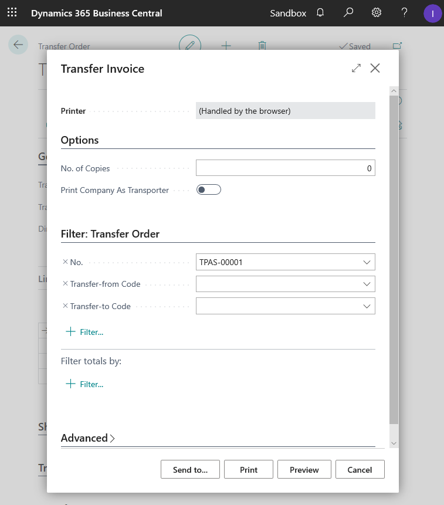
- Press Preview
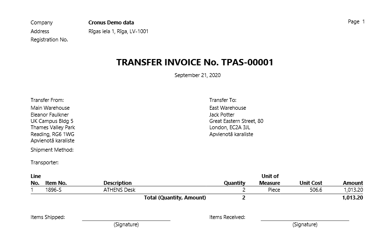
Walkthrough: Post Advance Holder Transactions and Prepare Advance Statement Report
About this walkthrough: Advance holder transactions are the procurements made by the Employee, that are considered as company expenses. When a procurement happens, an advance holder reports to the company about the expenditures that were made. This walkthrough demonstrates the process for recording, controlling and reimbursing employee expenses.
Role: No specific user roles are required.
Story: You are John Roberts, assigned by Cronus International to be a CFO in Cronus Ltd. The company runs business in the sphere of sales of furniture and rendering consultation services related to interior design upon request of local customers. Cronus is required to record employee expenses for John Smith and create Advance Statement report.
Pre-requisites: Master data catalogues to be created and configured.
Steps
Click on the button Search for Page or Report...
Enter Vendor, and click the related link.
Apply Blank Vendor Card Template 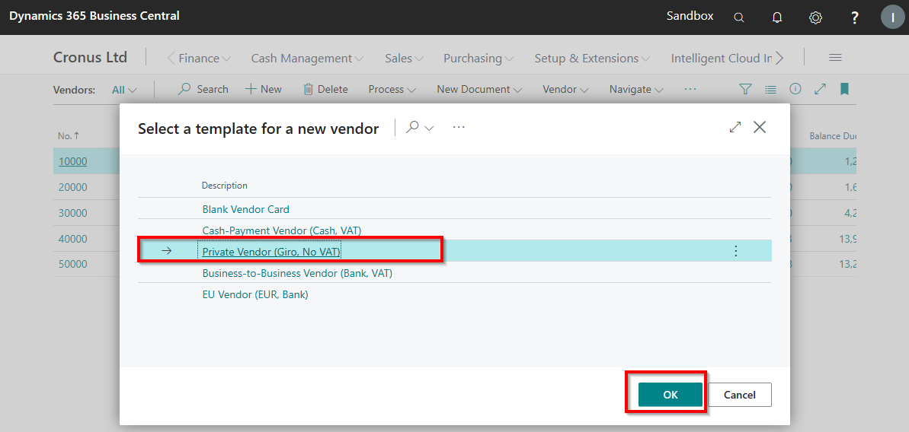
Complete Vendor Card information by entering Name - John Smith 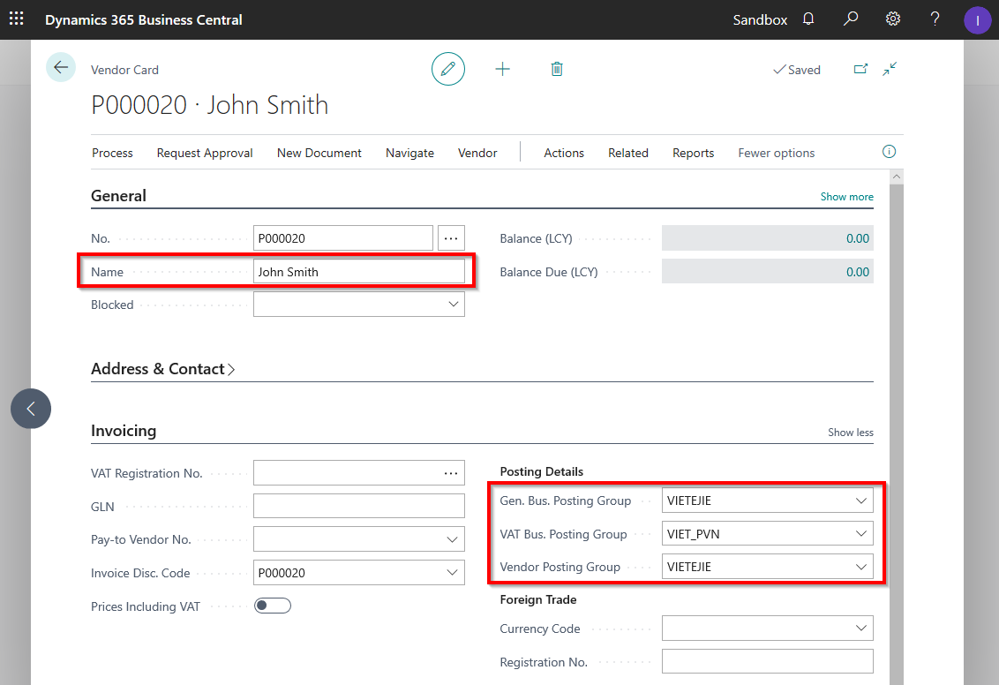
Click on the button Search for Page or Report...
Enter Purchases & Payables setup, and click the related link. 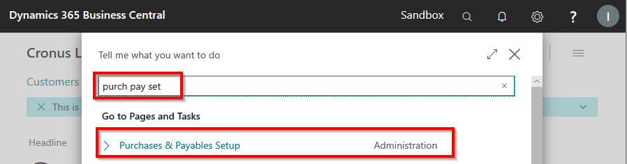
Enable function Copy line description to G/L Entry 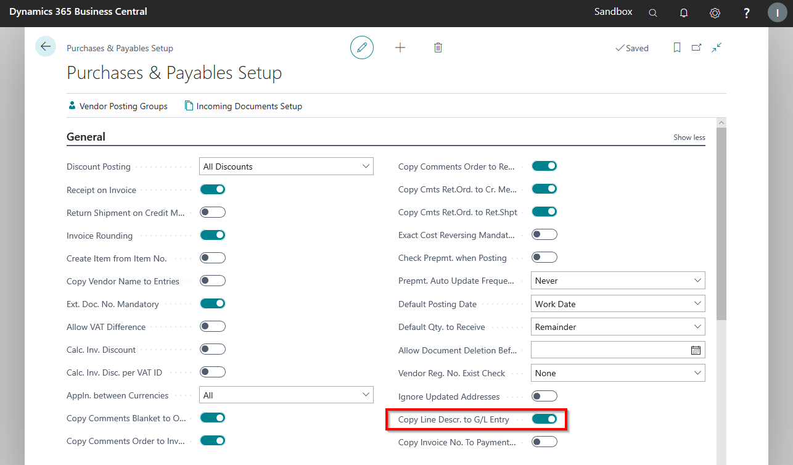
Click on the button Search for Page or Report...
Enter Purchase Invoices, and click the related link.

On the ribbon, on the home tab, click New. 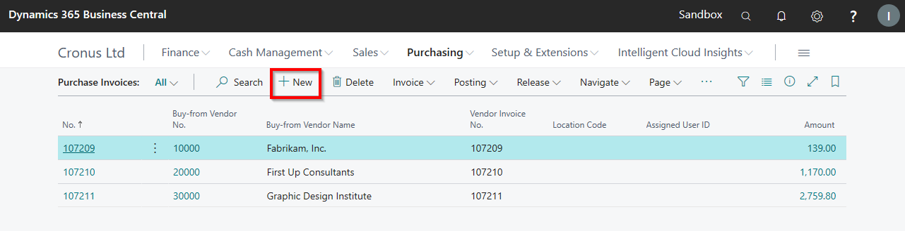
In the Vendor Name field select required vendor (50000 Nod Publishers).
Complete Posting Date, Document Date fields with desired date, for example today's date
Enter Vendor Invoice No. AA-1334 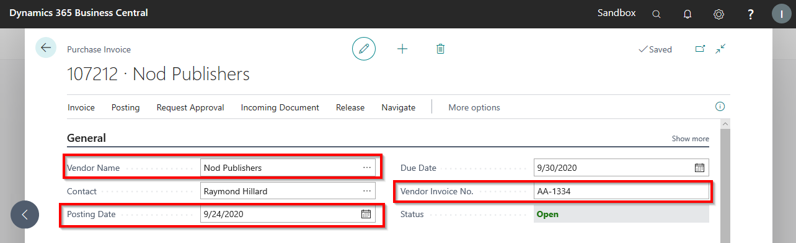
Go to the Shipping and Payment FastTab. In Pay-to select -Another Vendor, in next field Name select required employee -John Smith. 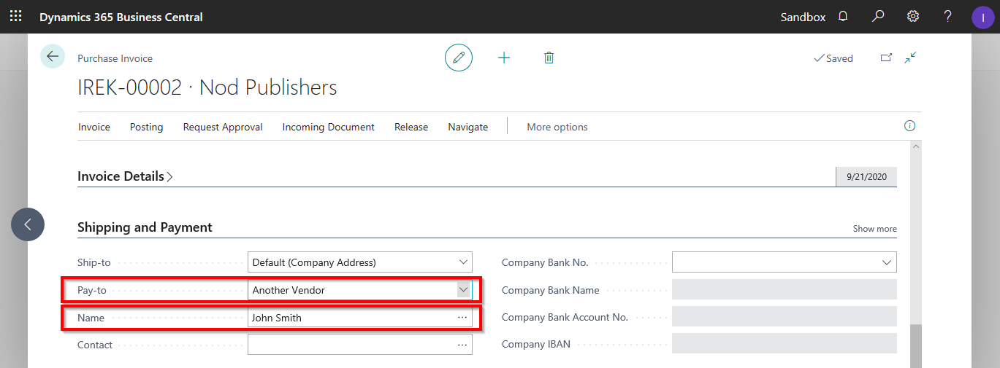
Move to the Lines.
- In the Type field, enter G/L account.
- In the No. field, enter required expense account (8320).
- In the Quantity field, enter 1.
- In the Unit of Measure enter HOUR
- In the Direct Unit Cost Excl. VAT field, enter 100. 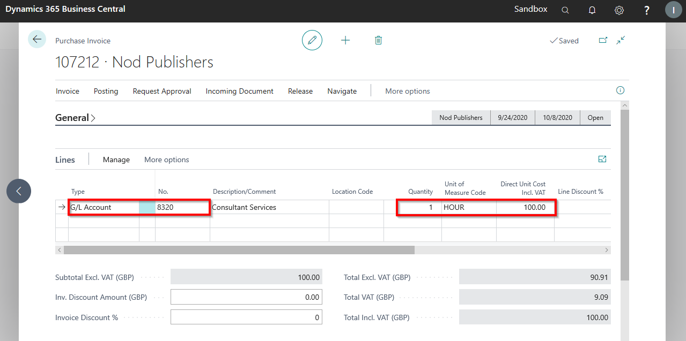
Click Post.
Click on the button Search for Page or Report...
Type Advance statement report and select Advance statement report from Reports and Analysis

Set Printing Options:
- Advance statement No. – enter number that should appear as document number on the printout (1)
- Vendor No. – select Vendor No. for Advance holder (John Smith)
- Date Filter – set date filter according to posted vendor ledger entries ( for example current month)
- Press Preview and review the printout:

Walkthrough: Inventory
Phys. Inventory Document
About this walkthrough: Company may perform a stock-take on regular basis, in order to control item quantities in system and in nature. This walkthrough demonstrates the process for recording and controlling physical inventory.
Role: no specific role required
Story: You are Richard Lum, Production Manager in Cronus Ltd. The company runs business in the sphere of sales of furniture and rendering consultation services related to interior design upon request of local customers Cronus Ltd is required to perform an inventory stock-take. Your task is to calculate stock for item 1896-S and prepare Physical Inventory Document.
Pre-requisites: Master data catalogues to be created and configured.
Steps:
- Click on the button Search for Page or Report...
- Choose the search icon, enter Phys. Inventory Journals, and then choose the related link.

- Choose the Calculate Inventory action.
- In the Calculate Inventory window, specify the conditions to use to create the journal lines, such as whether to include items that have zero recorded inventory.
- Posting Date - today's date
- Document No. - (INV034)
- No. - (1896-S)
- Choose the OK button.
- For first journal line Item 1896-S change Qty. (Phys.Inventory) to 3

- Post journal by clicking on Post/Print and Post
- Choose the OK button.
- Enter Phys. Inventory Document in Search for Page or Report…

Note: The document can be printed only after the Phys. Inventory Journal lines are posted and Adjust Cost-Item Entries job has been successfully executed.
- Set Printing Options:
- 1.Person.. 5.Person – select employee (AH, JR, MD)
- Responsible Person- select employee who is financially responsible for keeping the stock accurate – (RL)
- Apply Phys. Inventory Ledger Entry Filters set filter to Document No. (INV034)
- Press Print

Inventory Write-off Document
About this walkthrough: Company may write off items from stock that are damaged and not suitable for sale. Inventory Write-off document is used for writing-off goods that shall not be sold and recognized as expenses. This walkthrough demonstrates the process for writing off physical inventory.
Role: no specific role required
Story: You are Katrīna Pavlova, assigned by Cronus International to be a CFO in Cronus Ltd. The company runs business in the sphere of sales of furniture and rendering consultation services related to interior design upon request of local customers. Few damaged goods are identified after the stock take. Your task is to write off damaged goods and prepare the documentation.
Steps:
Choose the Search icon, enter Item Journals, and then choose the related link.
Enter Posting Date- today's date
Enter Entry Type- Negative Adjmt.
Enter Document No.- T00001
Enter Item No. – (1920-S)
Enter Location - (MAIN)
Enter Quantity- 1
Choose the Post action to make the inventory adjustments.
Press OK to close the journal
Choose the Search icon, enter Posted Inventory Write-Off Document
- Set Printing Options:
- Reason – (Damaged Goods)
- 1.Person.. 5.Person – select employees from List of Employees (AH, JR, MD)
- Document No. - T00001
- Posting Date - today's date
- Press Preview